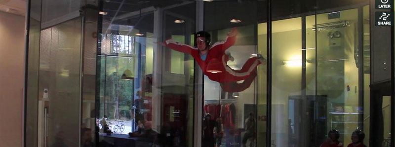

Voss Vind

Voss Vind har eit flott opplegg der du kan få oppleva gleden av å i alle fall nærma deg følelsen av å fly, utan å måtte opp i fly, ta på deg ein fallskjerm og hoppe i det. Flott dersom du er litt usikker og forsiktig av deg, med andre ord.
Dette seier dei om seg sjølv:
Hos Voss Vind kan du oppleve følelsen av fritt fall, og fly som supermann! Alle som er over 5 år og under 120 kg, kan komme og prøve vindtunnelen.
Vi tilbyr ulike pakkeløsninger for store og små grupper, bedrifter, utdrikningslag, familier og venner på opplevelsestur, i tillegg til tunnelltid med coaching for fallskjermhoppere. Uansett erfaring og nivå, vil du bli tatt godt vare på av våre dyktige og erfarne instruktører.
Grunnpakke kr. 690,-
3 minutter flytid fordelt på 2*1,5 minutter.
Dette tilsvarer 4 fallskjerhopp fra 12000 fot
Studentpris 490,-
Det kostar å være kar, men det finnes også mange andre pakketilbod for dei som blir gira.
Her er ein liten filmsnutt av min kompis Eivind som prøvde seg nyleg. Som du kan sjå av ansiktsuttrykk så er dette morro.
Verksemda vart etablert i november 2007 med stønad frå lokale investorar og Canica AS, eit av dei største private investeringsverksemdene i Noreg.
• Verksemda har i tillegg sterk stønad frå kommuneadministrasjonen på Voss
• Verksemda er del av ein større plan kor målet er å gjera Voss til den ønska turistdestinasjonen for menneske som søkjer ekstreme natur- og sportsopplevingar